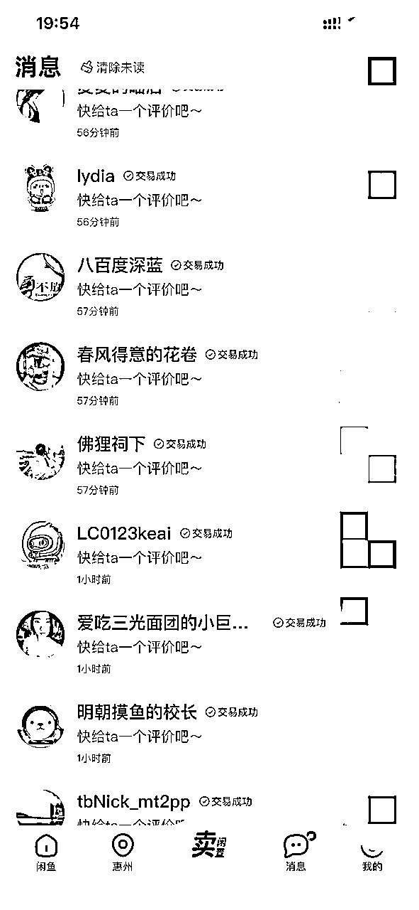
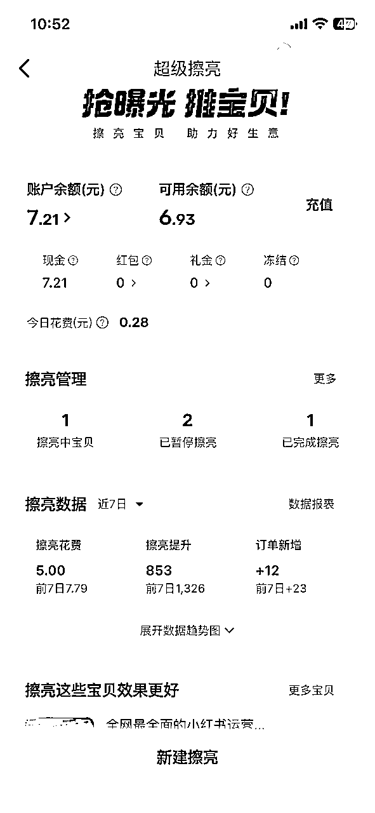
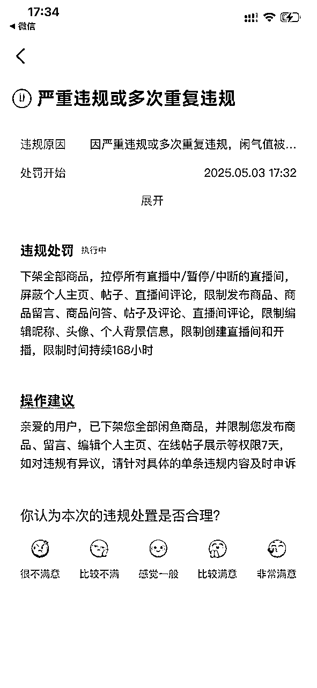
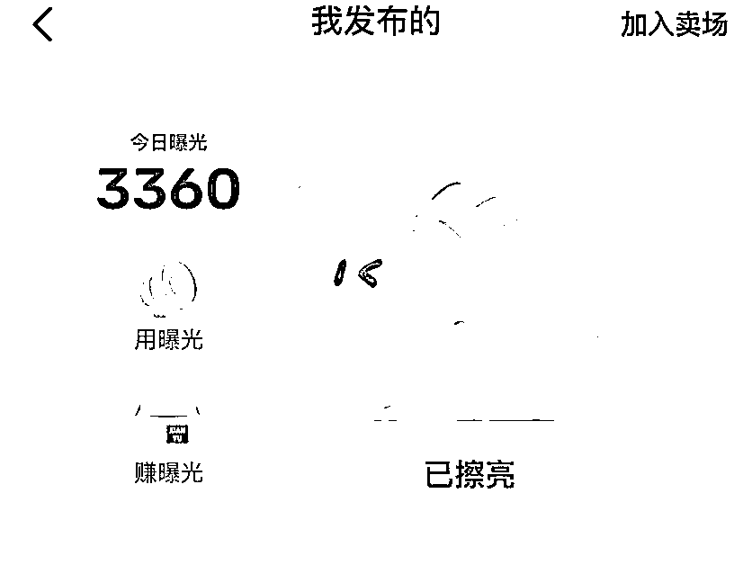
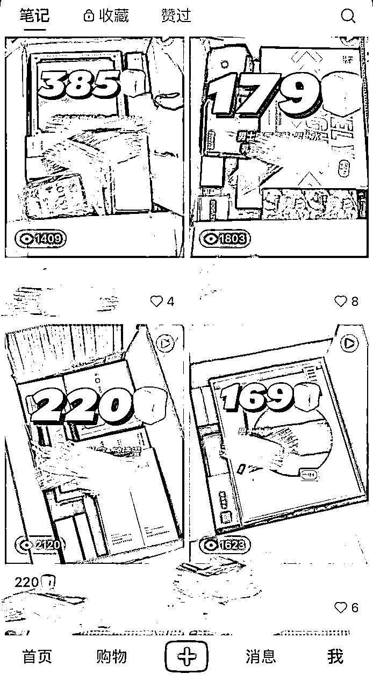
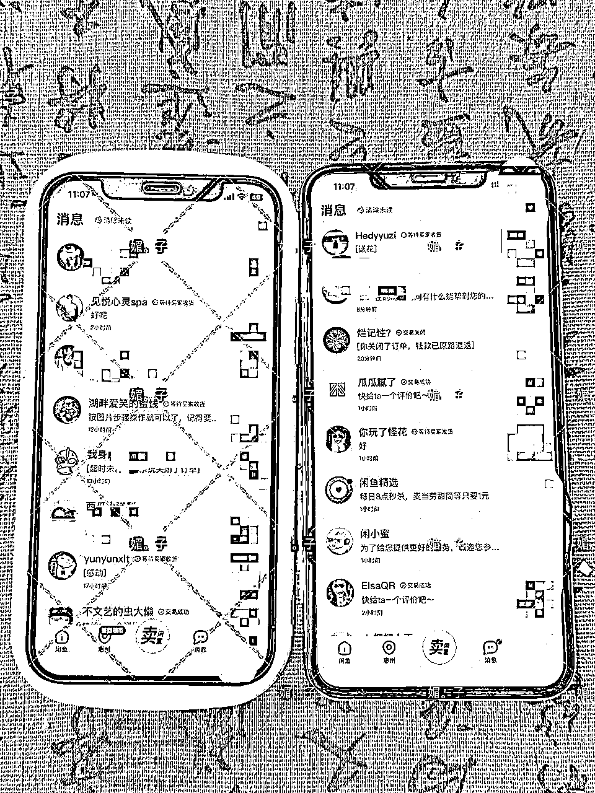
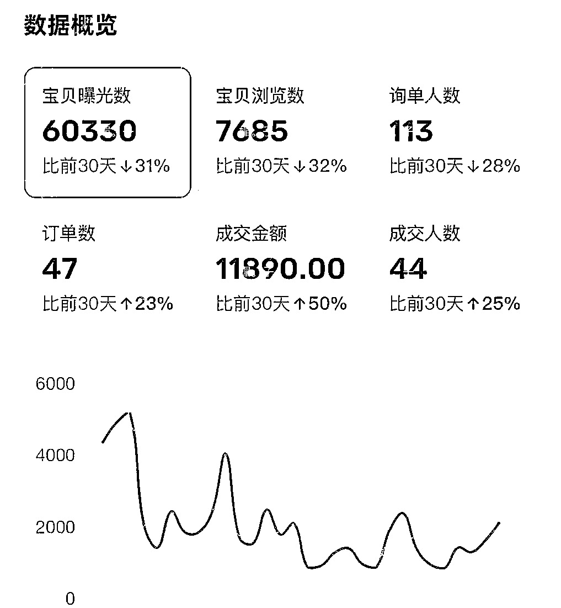
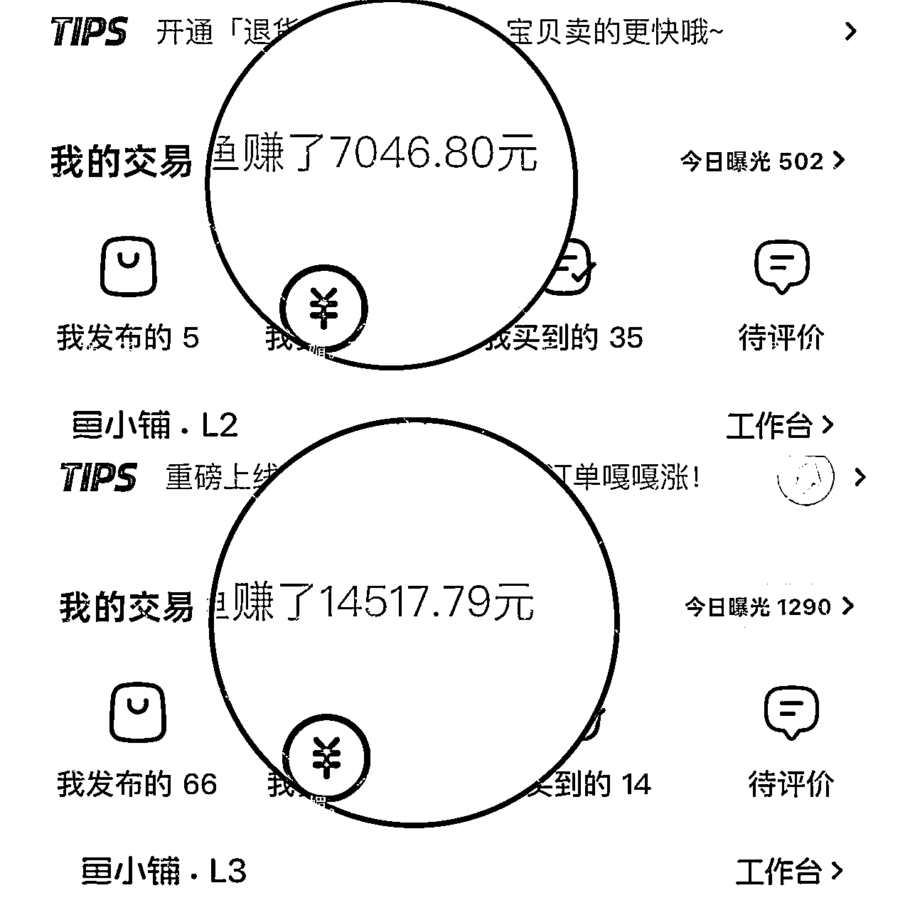

来源：https://fayabc6ou7j.feishu.cn/docx/XkbXdq2RwoxyP9xgMc2cEzE4nMh
大家好，我是媚子~
我是2024年4月份通过叁斤老师推荐加入生财的，也有1年多了，之前一直都潜水看帖子，这是我第一次发帖，想把我近期总结的一些闲鱼卖虚拟产品的经验分享给大家。
我是做得物好物分享的博主，几乎每天都会收到品牌方寄来的合作产品。这些快递越堆越多，多到我对象都吐槽说家里快成仓库了。
这些闲置产品放着也是积灰而且有些化妆品类的还容易放过期，不如利用起来？第一个想到的就是闲鱼，操作简单，于是我找了很多闲鱼相关的帖子来学习运营闲鱼。
最初我在闲鱼上架的都是一些实体闲置品，比如护肤品、包包、首饰等。
有一天，@叁斤老师分享了一份他的原创虚拟资料给我看。因为有闲鱼运营经验，而且这份资料干货很多，所以我第一反应是 想在闲鱼上卖。
在拿到叁斤老师的授权后，我正式开始在闲鱼卖虚拟产品。
一开始我对虚拟产品没有什么把握，毕竟不是实际能拿到手的产品，抱着试试看的心态，我将价格定的比较低，9.9元。
没想到，产品一上架，就来了好多个客户咨询，短时间内就成交了3单！这让我一下有了信心。
但是叁斤老师说要按原价去卖，不能太低了，于是我又把价格改回39元，结果提价并没有影响销量，单量还在持续增长！

然而，单量多，问题也多。由于前期产品介绍较简单，导致部分买家在理解和产品预期上出现偏差，下错单后申请退款的情况非常多。这既增加了我的客服工作量，还没赚到钱。
遇到问题，解决问题。
为了解决这个问题，我做的第一件事就是彻底优化产品介绍。更加详细地描述了资料的核心内容、适用人群、能解决的问题以及购买后如何获取等关键信息，把之前用户会问到的问题全部介绍了一遍。
同时，我还在自动回复设置了对应话术。这样，无论我是否在线，潜在买家都能在第一时间了解产品的核心说明，判断这是否是他们真正需要的。
如果是，他们自然会下单；如果不是，也不用浪费时间咨询。这一个设置很大程度减少了无效咨询和错单退款。
跟买家沟通的过程中，我发现有些问题被反复提到。为了提高回复效率，避免客户因等待过久而流失，我将这些高频问题的答案都添加到了搜狗输入法的“常用语”功能中。
当买家咨询时，我只需要点一下，就能快速给出完整的答复。这个方法可以能显著提升回复速度，进一步减少工作量。
闲鱼新增了“超级擦亮”的推广功能。费用门槛不高，充值最低10元，我决定试一下。
充值了10元，建立了 3 个不同的推广计划进行测试。过了几小时，显示只有一个计划能够带动曝光和咨询。我就暂停了其余两个计划，将预算集中在表现最好的那个计划上。
结果证明，这次尝试是成功的，“超级擦亮”带来了相当可观的流量，且投入产出比非常理想。

在闲鱼卖的正火的时候，我犯了一个低级错误：上架了平台禁止的违规产品，我的主账号被处以“关小黑屋”7天的惩罚。

那一刻我确实有些慌乱。但没多久，我开始思考应对方案。
我立刻启用了我对象的闲鱼账号，将我的热销产品重新上架。由于这个账号平时疏于运营，初始曝光量极低，当天仅有5个。
为了快速激活新账号，我采取了一系列操作：
经过这一系列操作，新账号当天的曝光量就飙升至3000＋！并且收到了 6 个咨询，成功卖出 3 单。

一个小插曲：
为了降低账号违规带来的损失，叁斤老师跟我说，可以通过小红书引流到闲鱼成交，把小红书也当作一个流量来源
我觉得这个思路很不错，就把得物大牌的产品都上架小红书卖，虚拟产品也开了一个号，测试下来，实体产品在小红书上比虚拟产品更好卖（也可能我做的内容比较简单粗暴）

现在主账号已经解封，新账号也稳定出单。两个账号同时运营，每天都能稳定 10 多单，副业日均收入超过300元。

虽然这份闲鱼副业收入不算很多，跟大佬们也没得比，但作为一份零花钱，我觉得还是很不错的。未来，还会继续深耕闲鱼平台，挖掘更多有趣的玩法和变现方式。
从一开始的清库存，到意外发现虚拟产品的机会，再到经历封号后的快速调整，我的闲鱼副业看起来还是有不少波折，但这期间也有不少收获。
附一下我 2 个账号在闲鱼挣得收入，截至目前一共挣2万＋

